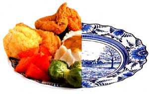
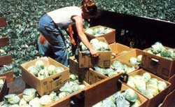
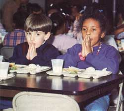
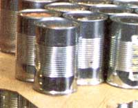

A Place At The Table
Nationwide efforts to feed the poor, including Project Glean, the Damiano Center, Blue Ridge Food Bank and resources for volunteers.
By Carol Taylor
November/December 1989
Feeding the hungry has become a do-it-yourself activity.
by Carol Taylor
HUNGER NUMBERS
32.5 million Americans-about 13%-are poor.
The Harvard Physicians' Task Force on Hunger estimated that 20 million people are hungry at least some time during each month.
40% of the U.S. poor have incomes less than half the federal poverty level.
Since 1978, the poverty rate for cities has grown by 1/6; the rate for rural areas has grown by more than 1/3.
IN CALIFORNIA, A GROUP called Dieters Feed the Hungry collects food from people who worry about eating too much and donates it to people who worry about eating at all. At the farmers' market in western North Carolina, farmers give each day's unsold produce to local shelters. In Idaho, wildlife officers deliver illegal game kills to organizations that feed the hungry. In a New Hampshire church, worshipers fill the collection plate with letters to Congress urging full funding of an antihunger program.
Across the country, people have looked at the hunger in their communities and have decided to take it personally. With no particular experience, they've organized everything from food pantries to soup kitchens to citizen lobbies working for change in public policy. They've also come up with innovative ways to help.
PROJECT GLEAN
CONCORD, CALIFORNIA
Project Glean owns one eight-foot flatbed truck, one crew-cab pickup truck, 16 orchard ladders, and assorted boxes, buckets, and picking bags. Thus armed, Glean skirmishes with hunger in the most populous state in the nation.
Nobody's laughing. In 1980, its first year of operation, the project distributed 20,000 pounds of fresh fruits and vegetables to hungry people in Contra Costa County. In 1989 it expanded its territory to San Joaquin County and its harvest to well over a quarter of a million pounds.
To glean is to gather food left in the fields or on the trees after harvest - hence the name. Volunteers follow mechanical and human harvesters into the fields, orchards, and backyards of central California to salvage onions, eggplants, corn tomatoes, plums, nectarines tangerines, lemons, limes, grapefruit, oranges, and pomegranates for the local food bank.
"It isn't easy," says Jill Kohler, coordinator of the project and one of a paid staff of two. "Volunteering for Glean means working all day in the hot sun, climbing ladders, lifting boxes that weigh between 20 and 60 pounds." Yet people seem willing. A core of 30 regulars, most of them seniors, work five or six days a week in season. Then there are the 60 mother-daughter teams from the National Charity League who spent part of their summer picking pears, and the Scout troops, church youth groups, senior associations, people from drug rehab centers, and offenders doing court-ordered community service. (Half the last group work off their speeding tickets and then return as true volunteers.)
Because of grading and packing controls, farmers can't market produce that's too big, too small, or cosmetically blemished. Many would prefer to have somebody eat it rather than plowing it under or feeding it to the livestock. After their fields have been harvested, they give Kohler a call, and out go the volunteers. Sometimes it's easy. Last summer, harvesters left 9,000 pounds of insufficiently square bell peppers lying in the rows-picked and ready to load onto the flatbed truck.
Remnant orchards are another rich source. When farms become housing developments, an orchard often remains uncut, or fruit trees survive to dot the backyards of new homeowners. (Note, incidentally, that we seem to be paving over some of the most productive agricultural land in the world.) Last June, gleaners picked 10,000 pounds of apricots from backyard trees.
Gleaners detest waste. "People will call and say, 'I've got five zucchini,' " Kohler says. "And we really want them, but we can't go haring all over the county to get them." Enter the local churches. On Sunday morning, parishioners bring their extra produce to church; on Monday, Glean's trucks make the rounds and collect it. (The record is 250 pounds from one Catholic congregation.) Then there are the "urban farmers" - homeowners with an acre or even a half acre of land who plant an extra-large garden to share.
Almost as outraged by unused space as by wasted food, Glean lobbies for "pocket orchards." Most churches are surrounded by open space - enough for, oh, 15 navel orange trees, which Kohler just nudged one congregation into planting. The grounds of public buildings, office complexes, schools, parks - they all look like future orchards, given the right perspective.
Project Glean is happy to supply it.
THE DAMIANO CENTER
DULUTH, MINNESOTA
THE WORKING POOR
A full-time, year-round job at the minimum wage pays $6,968 a year.
The federal poverty level for a family of four is $12,091; for a family of three, $9,431; for a family of two, $7,703; for a single person, $6,017.
70% of minimum-wage workers are adults.
44% of the jobs created between 1979 and 1985 paid less than $7,400 a year.
More than 5.5 million Americans live in poor households in which someone works full-time year-round.
20 million poor people (60% of the U.S. poor) live in households in which someone works at least part-time.
From 1978 to 1987, the number of full-time workers in poverty rose by 42%. The working poor are the fastest-growing segment of the poor.
In 1986 the wealthiest 1/5 of American families received 43.7% of national family income; the poorest received 4.6%. .
To Jim and Paul Dwyer, it made no sense at all. In 1987 the Damiano Center, an antipoverty effort the brothers had founded, was feeding more hungry people than at any time in its history. Other soup kitchens and food pantries in northeastern Minnesota reported the same high demand. Yet people who needed help weren't getting it from the single most important program aimed at domestic hunger: Food Stamps. While 14,000 people in the area were receiving Aid to Families With Dependent Children, which meant they were categorically eligible for food stamps, only 7,000 were getting them.
The Dwyers decided to find out why.
After analyzing the program for five months, they focused on two problems: "The process of getting food stamps was a bureaucratic mess," Paul recalls. "And if people did manage to get on the program, they were treated like garbage when they went to spend the stamps in the stores. Sometimes they decided they'd rather be hungry than humiliated. Unless they had kids. Then they almost always opted for humiliation."
First there was the application form-16 pages long and incomprehensible to most of the people trying to fill it out. (Nationwide, applications for food stamps range from four to 40 pages.) A readability analysis indicated that it was written at a level appropriate to the second year of graduate school.
The Dwyers attacked from two sides. First, they trained 186 low-income volunteers to fill out the applications and to document everything from household composition to financial assets. Those volunteers helped other applicants. As a result, 1,200 people were added to the food stamp rolls by March of 1989. And, not so incidentally, local businesses received an extra $131,000 in direct income from food stamp purchases.
As encouraging as that was, clearly the form itself needed to change. So the Dwyers headed down to St. Paul and buttonholed some state legislators. They said, Look, Minnesota already has a "plain language law" re quiring salespeople and lawyers to write contracts that are comprehensible to the general public. How about if we apply this law to the Department of Human Services?
In 1987 the legislature mandated that food stamp documents be written at the seventhgrade level. (The law was later extended to medical documents and is now spreading to other areas of state government, leaving Minnesotans awash in a sea of clarity.) The new applications went into effect in October 1989.
A second major barrier was the stigma. In the public mind (and to many low-income people, especially those newly unemployed), food stamp users were bums who drove their Cadillacs to the supermarket in order to pick up some porterhouse and a bottle of cabernet - all at taxpayer expense. And most of them probably weren't eligible anyway. The Dwyers set out to debunk a few myths.
Nationwide, two-thirds of food stamp recipients are children, elderly, or disabled; 20% are employed but not making enough to feed their families. Other able-bodied recipients are usually in job training programs.
CHILDREN THE POOR PLURALITY
20% of American children - or 1in 5 - live in poverty.
40% of the nation's poor are children.
The U.S. ranks 19th among developed nations in preventing infant mortality, down from 16th in 1980. The infant mortality rate is closely linked to the quantity and quality of the mother's diet during pregnancy and is an internationally used measurement of malnutrition.
37 million Americans - including 11 million children - have no health insurance.
Medicaid covers only 43% of poor families.
One-fourth of American women receive no early prenatal care.
2 industrialized nations do not provide universal health insurance for their citizens - the United States and South Africa.
The average benefit of 55 cents per person per meal (so much for porterhouse) cannot be spent on tobacco, fast food, toiletries, paper products, or alcohol (there goes the cabernet). And three recent studies by federal agencies concluded, not that the rolls are padded, but that 40 to 60% of people eligible for stamps aren't getting them.
But the antagonism was strong, and people got hassled. So the Dwyers went to the folks at a chain of supermarkets notorious for being nasty to food stamp customers and said, Guess what: Our figures show that food stamps support one job in every store in Minnesota that accepts them. Guess what else: Our statistics say that food stamp purchases pay for the operating costs of five of your stores. Now, you wanna be nice, or shall we have a theoretical discussion of boycotts?
Everyone was nice.
BLUE RIDGEFOOD BANK
VERONA, VIRGINIA
WOMEN: NOT THE SAFER SEX
34% of female-headed households are poor.
On the average, women earn 65% of men's salaries.
Wives who work full-time cam 57% of their husbands' salaries.
A 1986 study by a Stanford sociologist found that, on the average, in the year following a divorce a man's standard of living rises 42%; a woman's falls 73%.
About 1 in 2 U.S. marriages end in divorce.
Child care costs low-income working mothers 22% of their income.
"Rural areas don't need food banks," an urban hunger worker assured Phil Grasty in 1980. "Why, people there can pick fruit right off the trees." Sure, thought Grasty. Apples three times a day. In the fall. From all the ownerless orchards littering the countryside.
Having lived in the green hills and hollows of western Virginia all his life, Grasty recognized hunger when he saw it. So he started a food bank in a small rented warehouse that had no lights, no heat, and no water.
Essentially clearinghouses, food banks collect food from manufacturers, retailers, growers, charitable food drives, and private individuals and distribute it to agencies that feed the hungry - day-care centers, elderly feeding programs, soup kitchens, halfway houses, missions, and churches. To help cover the bank's operating costs, agencies pay about 12 cents a pound for food that would cost them in the neighborhood of $1.90 a pound in the supermarket.
Like any other enterprise, the food industry produces a certain amount of waste - $ 30 billion worth of food every year in production overruns, leftovers from test marketing new products, short-weight packaging, cartons whose pull dates are about to expire, and goods damaged when, say, a forklift operator drops a pallet of canned spinach. "All that stuff can go one of three places," says Grasty. "The landfills, the salvage market for 10 cents on the dollar, or the food banks - where it can feed hungry people while the companies enjoy being good citizens and earn a tax break."
Nationwide, more and more companies are choosing the banks. When Gerber decided to experiment with strained liver, taste-testing babies loudly and messily disapproved; the local food bank inherited 1, 100 pounds of frozen pork liver. When a trucking company got stuck with a tractor-trailer load of unclaimed onions, the neighborhood food bank got all 50,000 pounds. After General Mills had packed small blue rubber balls into a week's production of Cheerios, the company realized that children might swallow the toys; 160 semis of Cheerios rolled out to food banks across the country, for distribution to agencies feeding adults.
In 1981, the first year Grasty was in operation, he distributed half a million pounds of food. Today the Blue Ridge Food Bank serves 23 counties and nine major towns in western Virginia, with 13 full-time staff members and 200 volunteers. In 1988 it distributed 3 1/2 million pounds of food to 550 agencies, and it won an Award of Excellence from Second Harvest, a national network of 200 food banks.
Of all the food his bank has distributed, Grasty's favorite was the raisin bran. At a Post cereals plant, machines accidentally dumped twice the prescribed number of raisins into each box. "There was no way the company could sell it. People who bought it would have been irate with their next box. Lots of hungry people ate lots of raisin bran that year."
Of course, there are problems. Food banks get what the industry needs to get rid of, not what they need in order to provide a balanced diet. The result can be an odd conglomeration of items available at any one time: "Things seem to come in waves," Grasty muses. "We'll get 10 different kinds of soft drinks, then we'll get none. One year we got so many cookies we began to refer to ourselves as 'the cookie network.' Then there was the great sweet potato glut-farmers couldn't sell them, so we got them." And if the bank occasionally gets raisin bran that's too good to sell on the open market, it also gets food that's not good enough: overoxidized grapefruit juice that looks like muddy water, even though taste and nutrition ate unaffected; grape-flavored soda that's colored orange; potato salad that's overcooked.
"We live on the mistakes and the good will of the food industry," Grasty says. "Fortunately, there's plenty of both."
THE PEOPLE WORKING IN THESE three projects have several things in common. They are committed to the work they're doing, sometimes consumed by it; they believe that they help.
With one voice, they proclaim that their programs are not solutions to hunger, even on the local level, but are instead "Band-Aids," "a finger in the dike," "a mopping-up operation," "a redistribution of crumbs from the American table."
They agree that the continued existence of widespread hunger in the United States is optional; that it can be eliminated only by changing public policy and budget priorities; and that those changes will occur when the American people firmly announce that they want them.
Finally, they agree on one more thing: Millions of us are one lost job, one divorce, or one catastrophic illness away from poverty. Hunger could become, quite literally, our problem.
HELP FOR THE HELPERS
If you want to work against hunger, assistance is available. Here are just a few sources.
Hunger Action Handbook: What You Can Do and How To Do It, edited by Leslie Withers and Tom Peterson, describes a variety of hunger actions. A good place to start, it is available for $9.15 postpaid from Seeds, 222 East Lake Dr., Decatur, GA 30030.
Bread for the World
802 Rhode Island Ave. N.E. Washington, DC
20018 202/269-0200
A Christian citizens' lobby that supports governmental policies that alleviate hunger.
Children's Defense Fund
122 C St. N.W.
Washington, DC 20001
202/628-8787
An advocacy group that lobbies on a wide range of children's issues, including hunger.
Food Research and Action Center (FRAC)
1319 F St. N.W., Suite 500 Washington, DC
20004 202/393-5060
An advocacy group that provides materials, training, and field help in organizing the poor and their allies to fight hunger, especially in dealing with federal food programs.
Second Harvest
116 S. Michigan Ave., Suite 4
Chicago, IL
60603 312/263-2303
Solicits donated food and distributes it to its 200 member food banks; a good source of information about food banking.
World Hunger Year (WHY)
261 W. 35th St., Room 1402 New York, NY
10001 212/6298850
A source of information and assistance. Publishes WHY magazine, a bimonthly publication devoted to hunger issues.
|
 COURTESY OF PROJECT GLEAN Glean picked a quarter of a million pounds of produce in 1989 for local food banks. |
 COURTESY OF PROJECT GLEAN Volunteers for Project Glean salvage apples that would otherwise be left to rot. Inset: pruning makes remnant orchards more productive |
 COURTESY OF SECOND HARVEST Food banks distribute food to agencies that feed the hungry |
|
 COURTESY OF SECOND HARVEST Food banks receive pallets of ""brights"" with no labels. Volunteers sort and label them by code number. |
 |
|